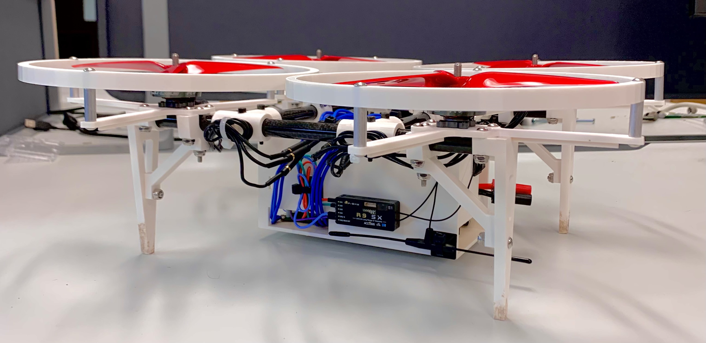
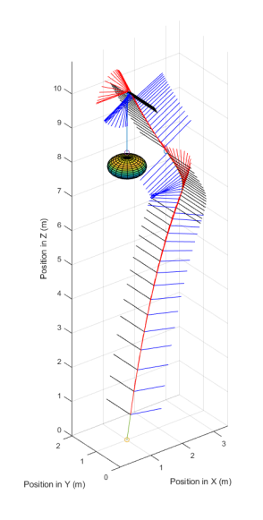
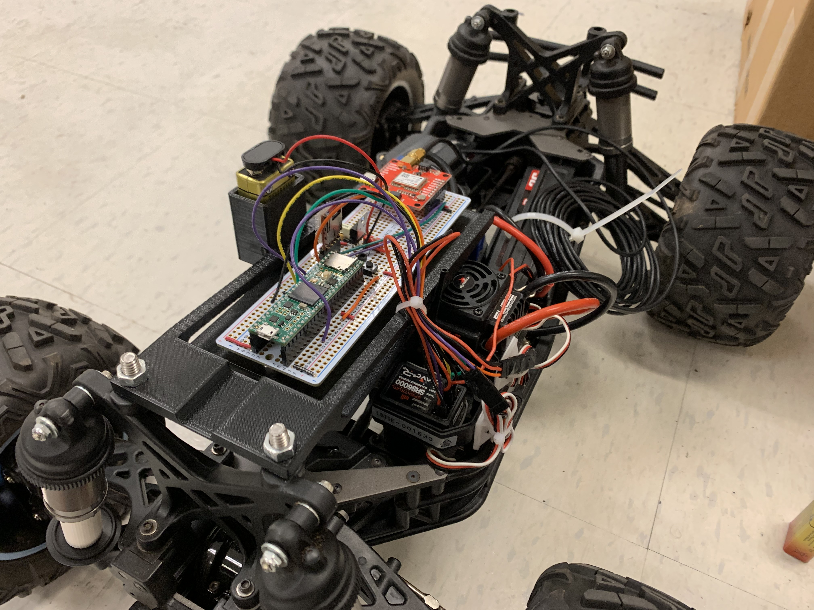
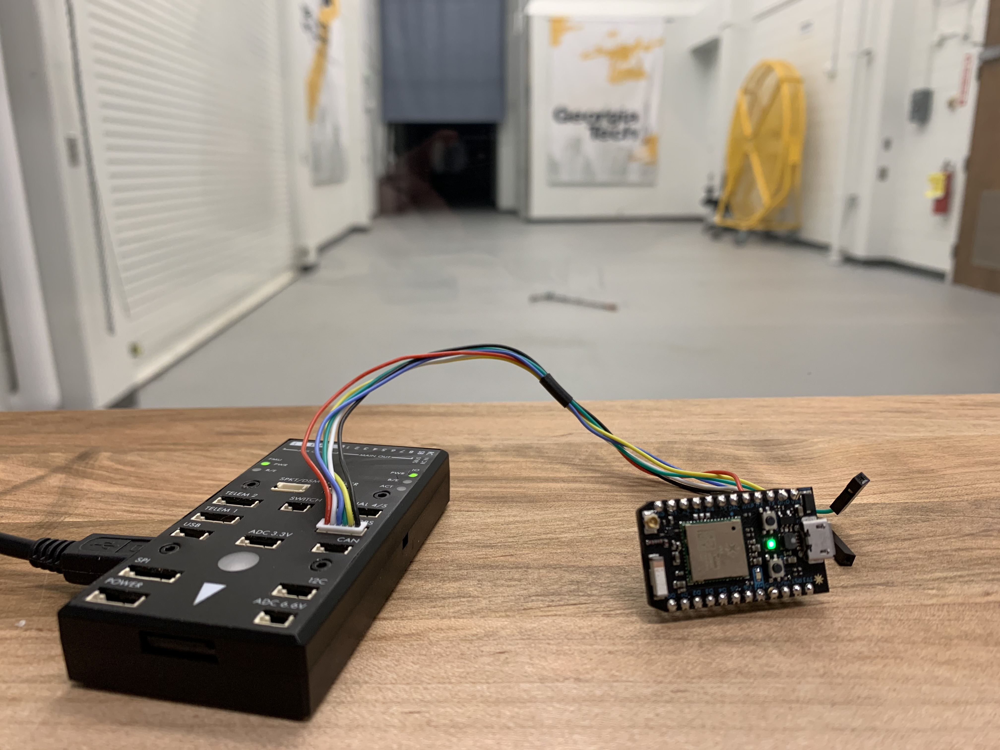

Custom Tactical Drone for First Responders

Description:
I am working on creating a custom built drone that is optimized for use by first responders.
The drone can take off after an upside down landing, stabilize its position indoors without GPS, and function
in complete darkness all while gathering critical information for first responders. I generated requirements,
wrote specifications, wrote code, designed and soldered electronics, and modeled, fabriacted, and built
a custom tactical drone. This was a solo project where I performed all of the design, implementation, and
testing of the quadcopter. This project has been an amazing learning experience where I have improved my
engineering skills and learned to make solutions that are robust and accurate. I have also been able to apply
advanced control theory and state estimation such as Kalman Filtering.
Lab: iREAL, Georgia Institute of Technology
Date: January 2021 - Present
Autonomous Quadrotor Trajectory Planning and Control for In-Flight Aerial Vehicle Capture

Abstract:
This paper develops a path planning and control architecture for an interceptor air vehicle designed to
capture small target UAVs, which are assumed to be at rest or moving slowly. The proposed architecture
has three main parts. First, a geometric path planner is developed to determine the trajectory for
the quadrotor to travel from its initial location to the rendezvous location. The second component of
the architecture is a minimal-time thrust profile generation algorithm. The algorithm represents the
quadrotor’s acceleration as a B-Spline and uses the convex-hull property of the spline to transform the
constraints into functions of the control points so an optimization problem can be formulated to minimize
time to capture. Lastly, a low-level controller tracks the orientation and thrust commands. In this
architecture, the thrust profile and geometric path are generated independently. The proposed planning
and control architecture provide one key advantage over alternative optimal control approaches: by
separating the thrust profile generation from the geometric path generation, the minimal time trajectory
generation problem has fewer variables and constraints to calculate, thus allowing on-board calculation of
the thrust profile. Results are presented demonstrating aerial capture of targets in simulation.
Authors: Zachary Olkin, Jonathan Rogers
Lab: iREAL, Georgia Institute of Technology
Date: May, 2020 - January 2021
Drone Dock Cruise Control

Description:
I modified a R/C car to have a cruise control system and log critical data. The overall goal of the research project is to land an autonomous
quadcopter on a moving dock. The truck pictured here will have the landing dock mounted ontop. This cruise control system has a few modes. The system
has a "pass through" mode where the truck can be controlled normally, a mode in which the cruise control setpoint can be wirelessly
changed, and a cruise control mode where a constant PWM width is passed into the ESC from the onboard computer. GPS data is logged onto a micro SD card
for further analysis after the test runs. By using this system, the truck does not need to be driven during testing, and a constant velocity can
be used for testing. This makes it easier to debug the system.
Lab: iREAL, Georgia Institute of Technology
Date: January 2021 - March 2021
Indoor Flight Lab "Synthetic" GPS

Description:
I designed and tested a tool that takes in VICON motion caputre data and converts it to an equivalent stream of data formatted as a GPS.
Using this tool, any flight controller that would expect GPS data can be used in the Indoor Flight Lab (IFL) with no modifications. The tool can be customized to
fit anyone's needs. Additional noise can be artifically added to the VICON data to better emulate GPS data. The rate at which the data is output
and the format of the data (NMEA and UBX) can also be chosen.
Lab: iREAL and Indoor Flight Lab (IFL), Georgia Institute of Technology
Date: January 2020 - January 2021